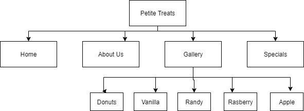
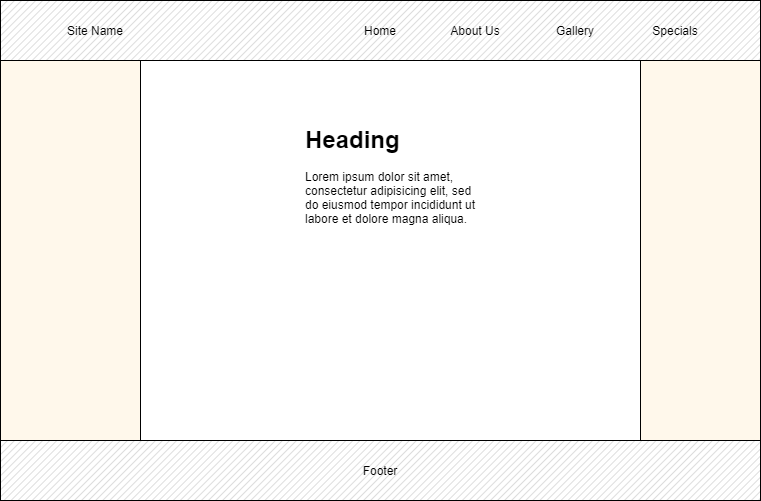

Petite Treat is a business owned by a family. The business has been in operation in Kirwan since 2012. The business is specialized in traditional Australian baked goods. Due to its existence for such a long period of time, Petite Treats has decided to seek an online presence for their business. There is growth of technology and the business sector is rapidly adapting to the use of technology to reach to more clients and be more competitive. Petite Treats mission is, therefore, to reach a large audience and increase its market share. This will be achieved through the website as a platform of reaching out to as many clients as possible.
Since the mission of Petite Treats is to increase its market share by utilizing technology as a means of reaching out to many clients, the business requires a website. The website’s main goal is to enable the business showcase their baked products to a wider audience.
The site is to be developed for the purposes of creating a wider market share for the business. It is also tailored to make the business competitive with the changing market trends. Putting all these into consideration, the website success will be evaluated with the number of sales the business will be making as a result of creating an online presence. When the baked products from Petite Treats gets to be recognized from a wider coverage and clients new clients starts ordering for these products, then the website goal would have been achieved.
Audience are the major consideration in the design and the development of the site. Almost all age groups indulge in baked products such as cakes, breads, and much more. These age groups are children to old aged people. However, the website will only target audience aged between 17 years to 35 years. These are the age groups that are actively using their mobile phones, tablets or computers for surfing. For this reason, it easier for them to find such products from the internet. Since this is a young age, the website is designed with minimal features to allow them find what they want within the shortest time possible. Such design would include the use of navigation bars for easy navigation of different pages within the site and much more.
The image below shows the site diagram of the website. The website has a total of 10 pages.
The client (Petite Treats) has provide some data such as testimonials as well as suggestions that need to be included in the website. These words will be used in the website as they are or additional information can be provided where necessary.
The website will use images saved in the image directory. The images include the website background image, images of different baked goods, and users for testimonials.
Below is the page design for the website. The website is required to have a navigation menu which will contain links to other pages of the website, the main body and the footer. This is illustrated in the low fidelity diagram below.
The fonts used in the site will generally be black. However, headers will have a different colors of font which is #719627. Sub-title will have a bold font. The pages will be styled to include mouse effects such as mouse hover effects on elements. The theme color of the website is #719627.
The project will be done I a month duration. Below is the distributed timeline per week’s activity: